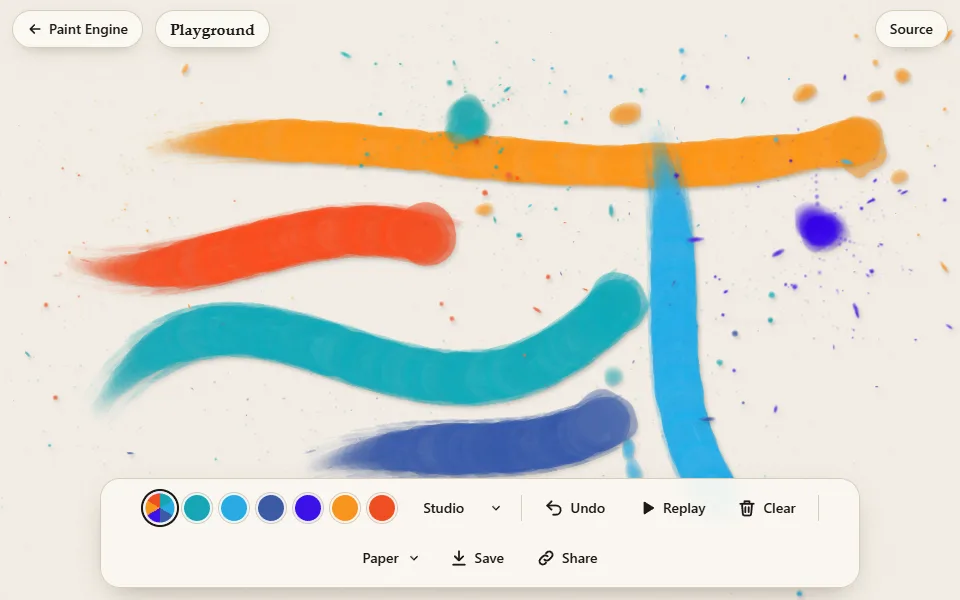
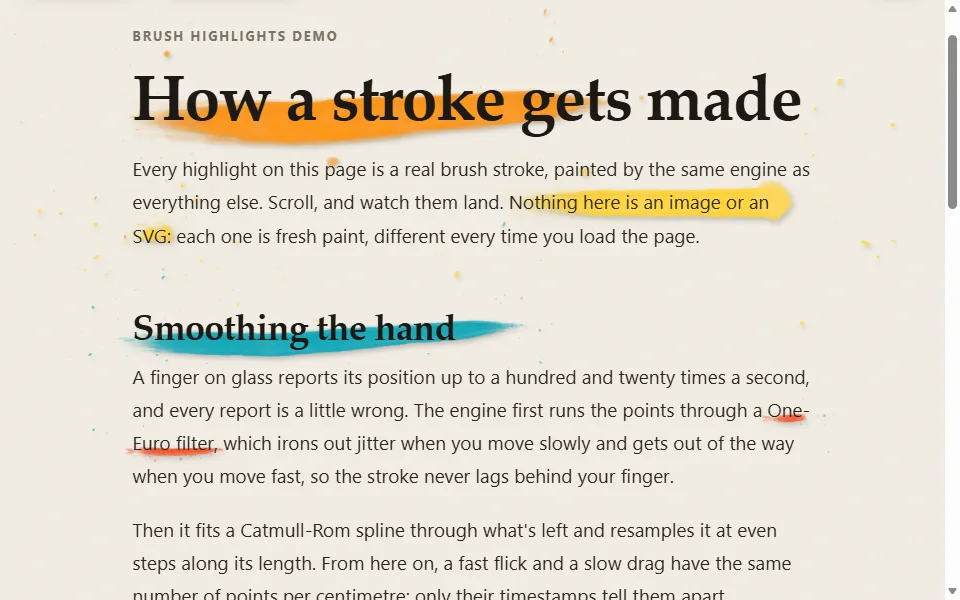
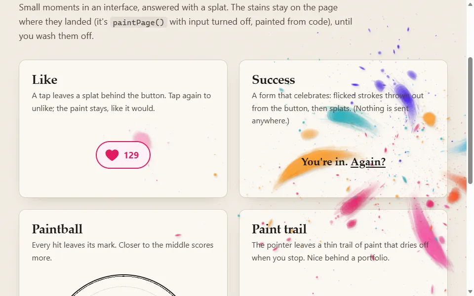
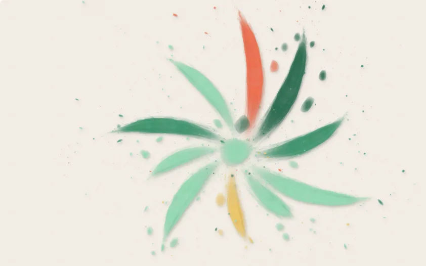
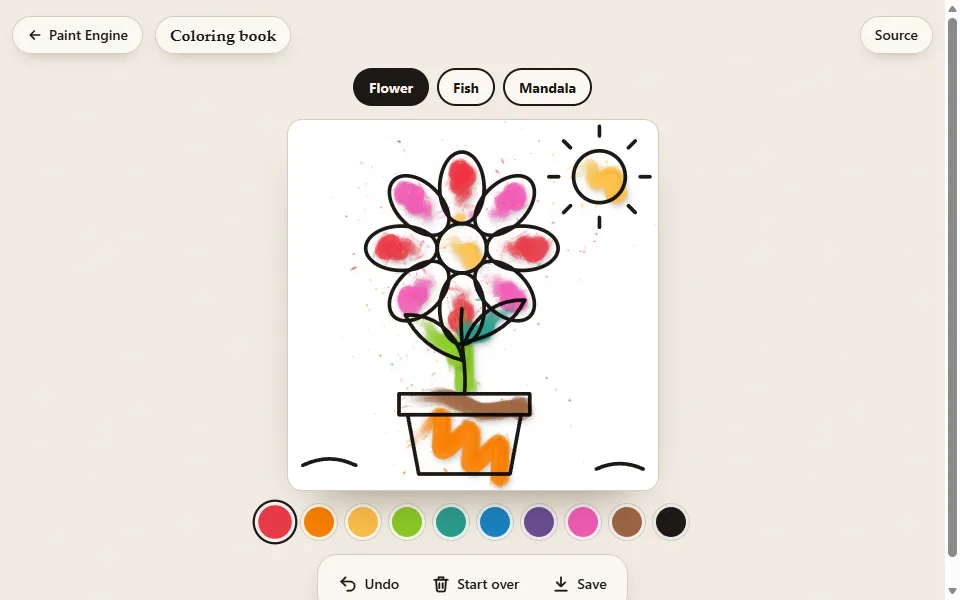
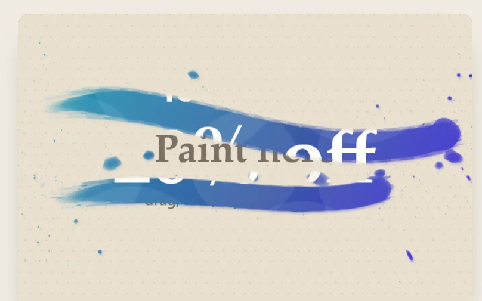
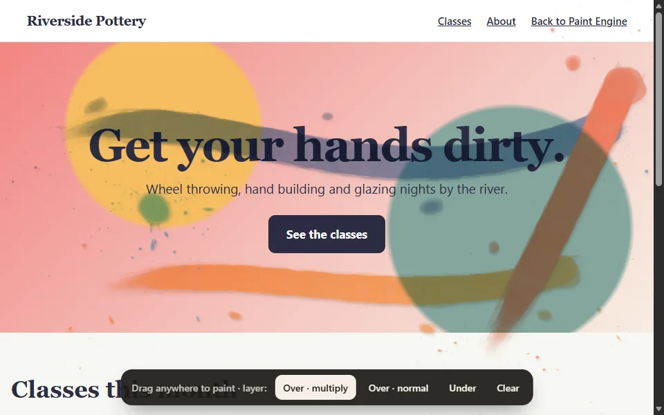
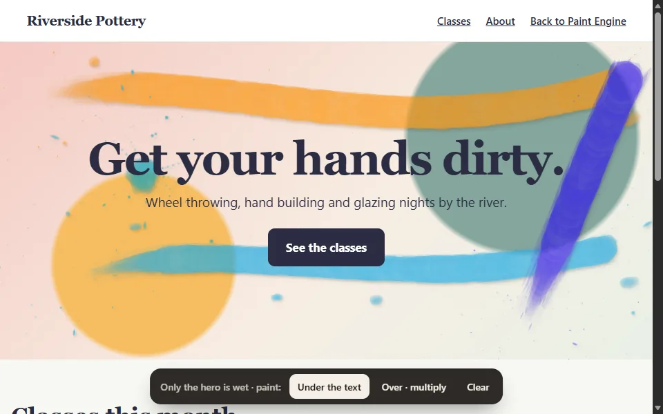
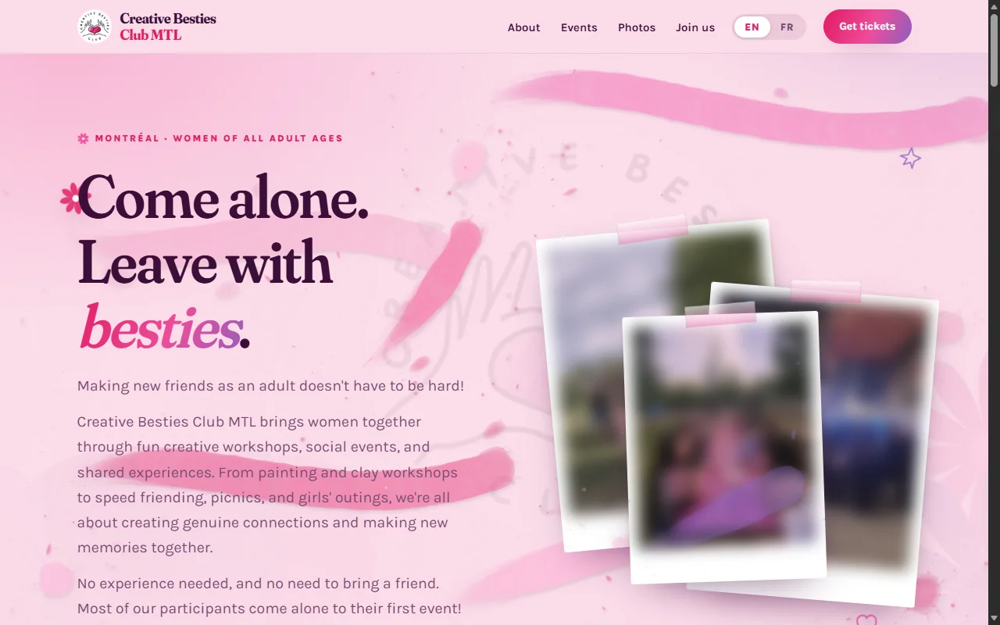
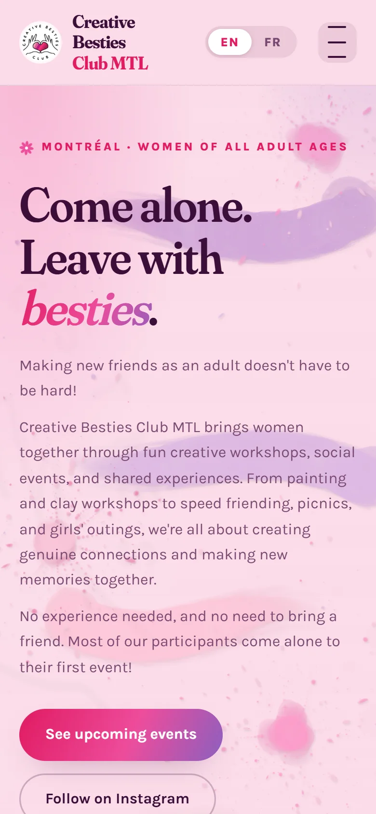

Caution: fresh paint
Paint Engine
Acrylic paint for the web. Please touch.
A JavaScript library, one file with no dependencies, that renders pointer input as acrylic paint: drags become brush strokes, taps become splatters. Use it on a canvas element, or let visitors paint on your page.
This whole page is wet. Drag anywhere to paint, tap to splatter.
How it paints
What each gesture paints
There are no brush settings: each mark is computed from the pointer's path and timestamps. Speed sets a stroke's width and dryness, the speed at release sets how it ends, and very short gestures become splatters. These six are painted from code with paintStroke(), at the speeds given.
· each run uses new random seeds, so the marks differ. Pass a seed and a mark repeats exactly.
Specs
What's in the library
-
One file, no dependencies
paint-engine.jsis 45 KB minified, about 17 KB gzipped. Load it with a<script>tag (globalPaintEngine), importpaint-engine.mjs, orrequire()it. TypeScript types included, no build step. -
Canvas 2D only
No WebGL, and no image or font files to load. Each mark is stamped from small sprites generated at startup, with normal alpha blending.
-
Seeded marks
Every random choice comes from a seed. Pass one and a mark repeats pixel for pixel; leave it out and each mark gets a new one. Marks are stored as recipes (path, colour, seed), which
undo(),resize()and replays redraw from. -
Bounded work per frame
The stroke in progress is drawn incrementally, with a cap on dabs per frame. Finished strokes are rendered in 3 to 8 ms slices between frames. History is capped (150 marks by default), so memory stays bounded.
-
Input
mount()reads Pointer Events: mouse, touch and pen, coalesced samples included. Points are filtered for jitter, smoothed with a spline and resampled every 5 px, so strokes don't depend on the device's event rate or pixel density. -
Painting a whole page
paintPage()covers the page or one element (area), under the content or blended over it. It reads touch events so a finger can paint and scroll at once, and paints into a canvas three screens tall that follows the scroll, to stay within mobile canvas limits on long pages.
Demos
Integration examples
Each demo is one short HTML file. Open it, then view the source.

Playground
A full-page canvas with palettes, undo, replay, PNG export, and share-by-link (the strokes are encoded in the URL).

Brush highlights
Underlines, highlights and circles fitted to words with paintStroke(), drawn when the text scrolls into view.

Splat buttons
Splatters as feedback on a like button, a form submit and a game target, plus a paint trail behind the pointer.

Seeded paintings
Paintings generated from a numeric seed: the same seed paints the same picture at any size. Applied to avatars and post covers.

Coloring book
An SVG line drawing over a mount() canvas, with the brush scaled to the sheet and a fixed palette.

Paint to reveal
The painted pixels used as a mask over hidden content, scratch-card style, with the revealed share measured.

Drop-in for any page
paintPage({ layer: 'over' }) on an existing page: paint blended over the content, no CSS changes.

Paint one section
paintPage({ area: '.hero' }): painting limited to one element and kept under its content.
Get started
Usage
Download paint-engine.js or load it from jsDelivr, then call one of the three entry points.
A canvas you can paint on
<div id="art" style="height: 400px"></div>
<script src="https://cdn.jsdelivr.net/gh/alexandrewillame/paint-engine@v1.0.0/paint-engine.js"></script>
<script>
const paint = PaintEngine.mount('#art');
// paint.undo(), paint.clear(), paint.color = '#e5484d'
</script>Let visitors paint your page
// at the end of <body>
PaintEngine.paintPage({
palette: ['#EE4C9B', '#8B5FBF', '#F6A6C8'],
layer: 'under', // or 'over': blended above everything
});Paint from code
const paint = PaintEngine.mount('#art', { input: false });
await PaintEngine.paintStroke(paint, [[40, 200], [300, 120], [560, 220]], {
speed: 700, flick: true, color: '#17A6B5', animate: true,
});
paint.splat(480, 90);npm, ES modules, TypeScript types, the full API and recipes are in the README.
In the wild
Used in production
Paint Engine was written for Creative Besties Club MTL, a Montréal club that runs creative workshops and social events. Their site uses it on every page: drags paint on the page, taps leave splatters, and the photos can be painted on too.
Visit the site Their paint toy
Screenshots from November 2026, in case the site has changed since. Members' photos blurred.

